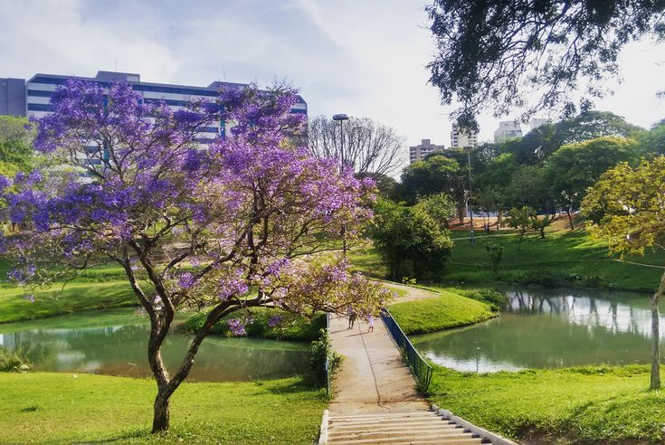
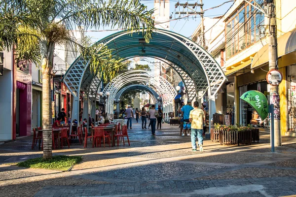

Pontos de Interesse
A cidade possui locais conhecidos como o Jardim Botânico, Zoológico Municipal, Bosque da Comunidade e diversas praças utilizadas pelos moradores.

O Parque Vitória Régia é considerado um dos principais cartões-postais da cidade de Bauru.
Inaugurado em 1988, o parque foi criado com o objetivo de preservar uma àrea urbana importante e oferecer um espaço destinado ao lazer, cultura e contato com a natureza.
O nome do parque é uma homenagem á planta aquática Vitória Régia, conhecida por suas grandes folhas flutuantes.
Atualmente o local possui áreas para caminhadas, apresentações culturais, atividades esportivas e eventos realizados para a população
Bauru é um município brasileiro localizado no interior de São Paulo, sendo o mais populoso do Centro-Oeste paulista surgiu no final do século XIX como um pequeno povoado ligado à expansão ferroviária no interior paulista.
O crescimento da cidade aconteceu principalmente com a chegada das ferrovias, que transformaram o local em um importante centro de transporte e comércio da região. Ao longo do século XX, Bauru se desenvolveu economicamente, destacando-se na educação, comércio e prestação de serviços.

A cidade possui locais conhecidos como o Jardim Botânico, Zoológico Municipal, Bosque da Comunidade e diversas praças utilizadas pelos moradores.
O sanduíche Bauru foi criado na década de 1930 por Casimiro Pinto Neto, um estudante nascido em Bauru.
Em um bar chamado Ponto Chic, na cidade de São Paulo, ele pediu um lanche diferente com pão francês, rosbife, queijo derretido, tomate e picles.
Os amigos começaram a pedir “um do Bauru”, usando o apelido de Casimiro, e o nome acabou ficando famoso em todo o Brasil. Hoje, o sanduíche é considerado um patrimônio cultural paulista.